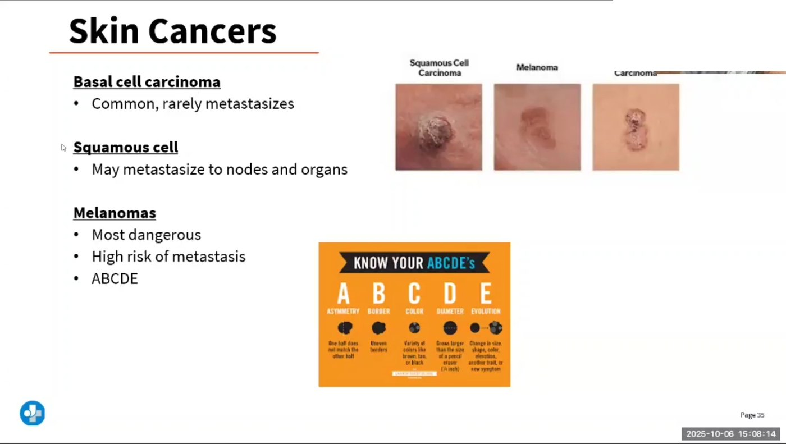

Basal cell · Squamous cell · Melanoma — and the ABCDE that catches the deadly one
Skin cancer is uncontrolled growth of skin cells after their DNA has been damaged — nearly always by ultraviolet light. Which cell mutates decides which cancer you get: the basal layer → basal cell carcinoma, the keratinocytes above it → squamous cell carcinoma, the melanocytes → melanoma. The layers are drawn on NG-051; this page shows what happens when each one goes wrong.
Ultraviolet light breaks DNA. Enough breaks in the wrong genes and the cell stops obeying the "stop dividing" signal.

UVB is mostly absorbed in the epidermis — it causes sunburn and directly damages keratinocyte and melanocyte DNA. UVA penetrates into the dermis, driving photo-ageing and also contributing to cancer. Tanning beds emit high-intensity UVA and are a recognized carcinogen — a tan is DNA damage made visible.
Darker skin does not mean immunity. Skin cancer is less common in deeply pigmented skin but is more often found late — and it favors the palms, soles, nail beds and mucous membranes, which people don't check.
Find the cell of origin on the cross-section and everything else about the cancer follows.
| Feature | Basal cell (BCC) | Squamous cell (SCC) | Melanoma |
|---|---|---|---|
| Cell of origin | Basal layer keratinocytes | Keratinocytes above the basal layer | Melanocytes |
| How common | Most common skin cancer | Second most common | Least common of the three |
| How dangerous | Locally destructive; rarely metastasises | Can metastasise — higher risk on the lip, ear, and in immunosuppressed patients | Most deadly; metastasises early and widely |
| Classic look | Pearly/waxy papule, rolled translucent border, telangiectasias, central ulcer that bleeds and re-scabs | Firm, red, scaly, crusted nodule or ulcer; may be tender | Asymmetric, irregular-bordered, multicolored lesion that is changing |
| Where | Sun-exposed: face, nose, inner canthus, ears, head & neck | Sun-exposed: face, ears, lower lip, dorsum of hands; also chronic wounds and scars | Anywhere — including palms, soles, nail beds, scalp, mucosa and the eye |
| Precursor | — | Actinic keratosis | May arise in a pre-existing nevus or appear as a brand-new lesion |
| Typical treatment | Excision, Mohs micrographic surgery (tissue-sparing, used on the face), curettage & electrodesiccation, cryotherapy, topical agents for superficial lesions | Excision or Mohs; radiation in selected cases; treat actinic keratoses early | Wide local excision guided by depth; sentinel lymph node biopsy for staging; immunotherapy/targeted therapy for advanced disease |
Five letters. Benign on the left, suspicious on the right, every time.
E is the most important letter. A lesion that is abrupt, sudden or rapidly changing in color, size or shape gets referred even if the other letters look reassuring. Add the "ugly duckling" sign: the mole that looks different from all of that person's other moles.
This is where nursing actually changes the outcome — and it is heavily tested.